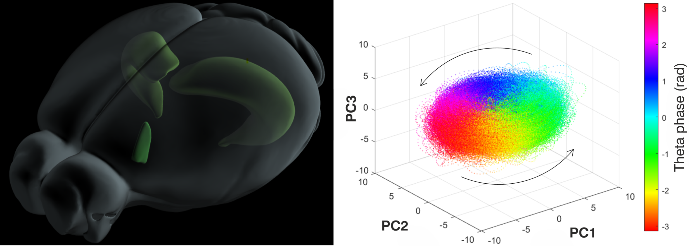
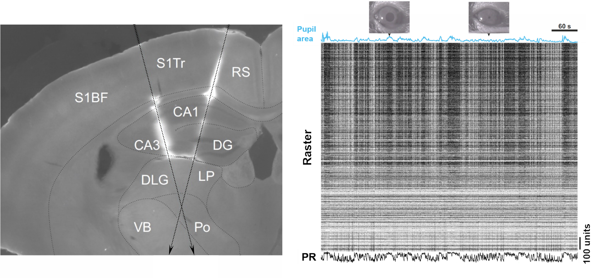
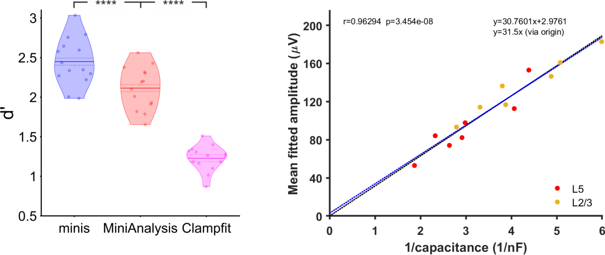

\(~~~~~~~~~~~~~~~~~~~~~~~~~~~~~~~~~~~~~~~~~~~~~~~~~~~~~~~~~~~~~~~~~~~~~~~~~~~~~~\) Current research \(~~~\) Past research \(~~~\) Github \(~~~\) Publications \(~~~\) CV
Martynas Dervinis, PhD
{kind=link}
Neuroscientist at Petersen Lab, University of Copenhagen
Interests: Cortical function, neurophysiological rhythms, epilepsy, data management and open science
Current Research#
Function and Biophysical Mechanism of Hippocampal Theta Rhythm#
 Illustration of Current Research. Image on the left: A transparent rendering of the mouse brain. The two banana-shaped structures in the posterior part of the brain correspond to the two hippocampi. The smaller structure in the anterior part of the brain is the medial septal nucleus of the forebrain. Image on the right: Principal component analysis of preliminary Neuropixels recordings in the medial septum reveals ring-like rotational dynamic in the theta frequency range generated by robust repeated sequential activation of neurons.{kind=link}
After spending 16 years in the UK, I have relocated to the beautiful Danish city of Copenhagen and am currently working at the University of Copenhagen. My current research project focuses on understanding the function and the biophysical mechanism of the hippocampal theta rhythm in rodents using neuronal population level approach.
At the outset of the project, I am going to carry out dual simultaneous extracellular electrode recordings in the hippocampus (the banana-shaped brain structure shown in the image on the left) and the medial septum (the smaller brain structure in the same image) while the animal is navigating through mazes of various spatial arrangements (the image on the right), freely moving in its cage, or sleeping. We, as a lab, are aiming to build a cell-type database detailing response fields, electrophysiological properties, and neural activity dynamics of medial septal neurons in relation to the hippocampal theta rhythm. In the later stage of the project, I am hoping to probe the role that different medial septal cell type populations play in generation and anatomical spread of theta waves across both the medial septum and the hippocampus using optogenetic techniques.
This work should deepen our knowledge about an under-researched and enigmatic brain area that is medial septum. This area is thought to generate the hippocampal theta rhythm with our preliminary data indicating that medial septal neurons are activated in robust sequences that are repeated on the theta timescale (the image on the right). Therefore, the insights gained during this project should further our understanding of the information processing function of this fundamental brain rhythm.
Past Research#
Neuroscience Data Sharing Platform at the University of Bristol#
 Schematic Representation of Bristol GIN Project. The image on the left shows its current stage where a data sharing platform and a version control system is being implemented. The image in the middle shows the next stage where a relational database will be implemented for rapid data queries. The image on the right shows how the system could evolve in the future by implementing a cloud computing environment.
Schematic Representation of Bristol GIN Project. The image on the left shows its current stage where a data sharing platform and a version control system is being implemented. The image in the middle shows the next stage where a relational database will be implemented for rapid data queries. The image on the right shows how the system could evolve in the future by implementing a cloud computing environment.
Open access to data, often generated by multi-group collaborations with large datasets, is increasingly central to scientific endeavour. It conveys many benefits including research transparency, efficiency and collaboration and is becoming a requirement for many journals and grant funding bodies. Therefore, scientists need easy, cost effective and user-friendly systems to make data accessible to collaborators and the public and transform research culture. We have tested several data architecture systems for use with neuroscience datasets and selected GIN as the most flexible, easy to use and reliable system. We have adapted this for use within University of Bristol (UoB) IT systems. Bristol-GIN and the accompanying Bristol Neuroscience Data Guide are under development and scheduled to be launched in Summer 2023.
Among data sharing platforms available to neuroscientists GIN is unique in the range of benefits it offers to researchers and the wider community:
It expands accessibility by moving the data outside the confines of local research institution managed shares.
In turn this eases both internal and external collaboration.
A well-thought-out synchronisation process guarantees safe and seamless integration of remote and local repositories.
It increases data safety as the separation of local and remote repository copies prevents unintended interference between team members working on the same repository. The remote repository can also act as a back-up copy.
Its version control allows rolling back to any previously recorded state of the repository in the unfortunate yet common case of newly introduced changes not working as intended.
It increases data security by granting fine-grained control to repository owners over the access privileges of their collaborators.
It increases data storage efficiency by achieving perfect data deduplication.
It increases data transparency by the dint of version control which records repository changes. Repository history can be inspected by collaborators at any time, by reviewers during the publication process, and by colleague scientists and the public immediately after the publication of research outcomes generated using the repository.
GIN greatly expands the scope of project management. The personal investigator can have an oversight and administrative rights over repositories generated by the lab. He or she can require repositories to have a particular structure allowing the research process and outcomes to be easily examined in the remote repository. Moreover, multiple repository branches can be easily spawned with the aim of separating different aspects of repository processing (e.g., data collection, code development, data analysis) that can be overseen by different sub-teams.
It increases published data visibility by offering the digital object identifier (DOI) service so data repository can be easily cited and searched.
GIN is open source, can be further developed, and, therefore, possesses flexibility. It allows future extension of the system by augmenting it into a database integrated with bespoke data analysis tools.
Our goal is to develop Bristol-GIN to become UK-GIN, providing data management services for neuroscience research groups and other adjacent labs across the country. We intend to expand this service by developing a database that would allow data queries based on any relevant data/metadata parameter across repositories. This major development would make it possible to further build a cloud programmable layer dedicated to executing bespoke data analysis workflows integrated with the database and run by teams of neuroscientists. Once fully implemented, this data management system would embed open science, team science, and big science as the default approach for all UK Neuroscience.
Dual Extracellular Electrode Recordings in Mice#
 Recording Brain Activity and Animal's Level of Arousal. The image on the left shows a coronal mouse brain section with Neuropixels silicon probe tracks. The image on the right shows a data recording interval with pupil area size trace at the top, the spiking activity of neurons captured by two silicon probes in the middle, and the firing rate of all neurons at the bottom. Abbreviations: Barrel fields of the primary somatosensory cortex (S1BF), trunk area of the primary somatosensory cortex (S1Tr), retrosplenial cortex (RS), cornu ammonis (CA), dentate gyrus (DG), dorsolateral geniculate nucleus (DLG), lateral posterior nucleus (LP), ventrobasal complex (VB), posterior nucleus (Po), population rate (PR).{kind=link}
Neural activity can be broadly divided into fast and slow types. The former consists of neuronal cell membrane potential fluctuations occurring on the timescale of milliseconds. This is the timescale that the brain uses to carry out computations and, therefore, to produce perception and cognition. On the other hand, slow type activity consists of neuronal membrane potential fluctuations occurring on the timescale of seconds. The slow activity is typically thought to underlie attentional processes and brain state transitions and, therefore, is considered to be of non-computational nature. Spontaneous neural activity dynamics on this particular timescale is the subject of my latest research.
In our research we use state of the art high density Neuropixels extracellular electrodes to simultaneously record local field potentials and spiking activity of hundreds of neurons. The top left image shows a coronal slice of the mouse brain with fluorescent tracks indicating two electrodes inserted at different locations in the left hemisphere, spanning approximately 4 mm of the brain tissue each, and recording activity in cortical, hippocampal, and thalamic regions. Spiking activity yielded by these recordings can be represented as a raster image shown on the top right with black stripes representing action potentials (spikes) generated by individual neurons. Activity of individual neurons can also be pooled together to generate population firing rates in individual brain areas represented by a black trace below the raster.
In addition to neural activity recordings, we also image the animal’s pupil. The size of the pupil area is often monitored in neuroscience research as it indicates the animal’s level of arousal. Large pupil is indicative of a high arousal state and increased motor activity, while the small pupil is associated with low levels of arousal and quiescence. Pupil size measurements allow us to link neural activity with fluctuations in levels of arousal. These fluctuations are known to occur on the slow (~0.3 Hz) and infra-slow (~0.03 Hz) timescales and are strongly correlated with neural activity fluctuations in the same frequency range. Pupil signal, therefore, is a critical indicator when studying neural activity dynamics on the timescale of seconds.
Having means to record detailed neural activity across many different brain areas while simultaneously monitoring animal’s levels of arousal allows us to look at the activity dynamics of individual neurons and populations of neurons on the slow and infra-slow timescales. We can link these dynamics to arousal and the brain area’s position within the information processing hierarchy starting with low level sensory thalamic areas and ending with high-level association areas like the hippocampus. Ultimately, linking our research with a wide body of literature in the field of human brain imaging, which specifically is concerned with neural activity on the slow timescale, helps us to understand fundamental aspects of human intelligence. A manuscript describing our findings are currently under preparation.
Large Scale Computational Modelling of Thalamocortical System#
Simulation of Physiological Sleep Rhythms and Absence Seizures. The image on the left shows a schematic representation of the thalamocortical neural network model used in my simulations with separate cortical and thalamic subnetworks and connections between them. The image on the right shows simulated electroencephalogram traces that the model produces in different physiological and pathological states. Abbreviations: Cortical layers 2 and 3 (L2/3), 4 (L4), 5 (L5), and 6 (L6), nucleus reticularis thalami (NRT), thalamocortical nucleus (TC), first order (FO), higher order (HO), regular spiking cell (RS), early firing cell (EF), intrinsically bursting cell (IB), repetitive intrinsically bursting cell (RIB), network driver cell (ND), and fast spiking cell (FS).{kind=link}
A typical absence is a non-convulsive epileptic seizure that is a sole symptom of childhood absence epilepsy. It is characterised by a generalised hyper-synchronous activity (2.5-5 Hz) of neurons in the thalamocortical network that manifests as a spike and slow-wave discharge in the electroencephalogram. Although childhood absence epilepsy is not benign, its physiological basis is not well understood.
In an attempt to make progress regarding the mechanism of spike and wave discharges, I built a large-scale computational model of the thalamocortical network for my PhD thesis (shown in the image on the top left). The model consisted of Hodgkin-Huxley type physiologically realistic neurons that are well suited to model rhythmic behaviour of neural systems. For computational reasons these neurons were reduced to single compartments in the thalamus and double compartment models in the neocortex. A detailed realistic network connectivity pattern was used that had been derived from the literature survey.
The resulting model replicated key cellular and network electric oscillatory behaviours as commonly reported in the literature, as well as routinely observed in the neural activity recordings in sleeping or anaesthetised animals in our lab. Simulations of network oscillations are shown in the encephalograms on the top right. These oscillations included delta waves (1-4 Hz) characteristic of deep stages of sleep, slow waves (<1 Hz) and the sleep spindles (6.5-14 Hz) typically observed in early stages of the sleep cycle. The model would transition between different oscillatory behaviours in response to changes in the input resistance of neuronal membranes mimicking physiological processes observed during sleep in humans and animals. Crucially, when various pathological changes were introduced, simulated desynchronised neural activity characteristic of wakefulness would start producing regular highly synchronous spike and wave discharges that occur during human (4 Hz) and rodent (7 Hz) absence seizures. The construction of this computational model led us to device a single theoretical framework to understand childhood absence epilepsy and to summarise decades of detailed experimental work in both humans and animals.
The first version of this model was presented in my PhD thesis and, not withstanding certain limitations, allowed to model spike and wave discharges as observed in humans. The second version of the model fixed earlier limitations and extended its application to animal models of spike and wave discharges. Description of the second version of the model have been published in Paper 1 and Paper 2. The Neuron code describing version 1 and version 2 of the model is available on Github.
Analysis Software Development for Intracellular Recordings#
 Detecting excitatory postsynaptic potentials in the central synapse and doing quantal analysis with 'minis'. The image on the left shows the performance (d') of 'minis' software and other two most commonly used algorithms (Mini Analysis and pClamp) in the field of synaptic function research in detecting extracellular postsynaptic potentials in cortical pyramidal cells. The image on the right shows the quantal analysis results produced in the same type of cells by 'minis'. The amplitude (quantal size) of minis turns out to be inversely proportional to the cell capacitance (size) giving the estimate of the electrical size of synapse equal to 33 femtocoulombs. Abbreviations: Cortical layers 2 and 3 (L2/3), and 5 (L5), miniature excitatory postsynaptic potential (mEPSP), quantal analysis (QA). References: Nevian et al. (2007) and Hardingham et al. (2010).{kind=link}
Miniature postsynaptic potentials or currents (also known as minis) commonly occur across many types of synapses of the central nervous system and are caused by spontaneous release of neurotransmitter from presynaptic vesicles. Measurements of minis’ amplitudes, rise times, and frequencies are widely used in neuroscience research to assess the state of the synaptic function. However, accurate detection of minis is difficult due to larger minis overshadowing smaller ones and due to many smaller minis being difficult to distinguish from membrane potential noise fluctuations. As part of our work to devise an accurate method to estimate the electrical size of the central synapse, we have developed a software (called ‘minis’) that can detect spontaneous postsynaptic potentials reliably well. Our aim is to make this software available to the larger scientific community.
As part of this effort, we compared the performance of ‘minis’ to the two most widely used algorithms in the field of synaptic function research: ‘Mini Analysis’ (Bluecell) and pClamp (Molecular Devices). The image on the top left shows the overall performance (d’) of the three algorithms for detecting simulated excitatory postsynaptic potentials. d’ is a common measure of signal detection performance that combines both sensitivity and specificity of signal detection. ‘minis’ shows a superior performance compared to the other two algorithms. Currently we are working on a manuscript describing ‘minis’ software with the software trial version available on Github. The source code will be made available once the manuscript is published.
The ‘minis’ software can be used for detecting postsynaptic potentials and spikes but can also be used to do the quantal analysis in the central synapse. It does it by taking noise recordings in the pharmacologically silenced somatic intracellular recordings and superimposing them with simulated minis (by using the genetic algorithm) until the noise + simulated minis voltage trace roughly corresponds to the noise + real minis recording. In this way we can use the simulated minis distribution (3D distribution in terms of amplitude * rise time * frequency) as a proxy for the real minis distribution. The mean amplitude of simulated events turns out to be inversely proportional to the capacitance (or size) of neurons as predicted by the capacitor theory. By fitting this relationship with a line gives us an estimate of the electrical size of the cortical synapse which is approximately equal to 33 femtocoulombs of charge. Manuscript describing the quantal analysis method implemented in ‘minis’ is already available online.
Transcranial Magnetic Stimulation Studies in Humans#
I started my academic career as a cognitive neuroscientist and worked as a Research Assistant in a transcranial magnetic stimulation (TMS) lab. During this time I designed and implemented experiments investigating neural mechanisms of attention, spatial cognition, and awareness in humans. I was involved in the following projects:
Timecourse of mental number line processing in frontal and parietal cortices.
The role that awareness and the geniculostriate visual pathway play in triggering shifts of visual attention.
Control of spatial attention by parietal lobes: visual pathways and timing.